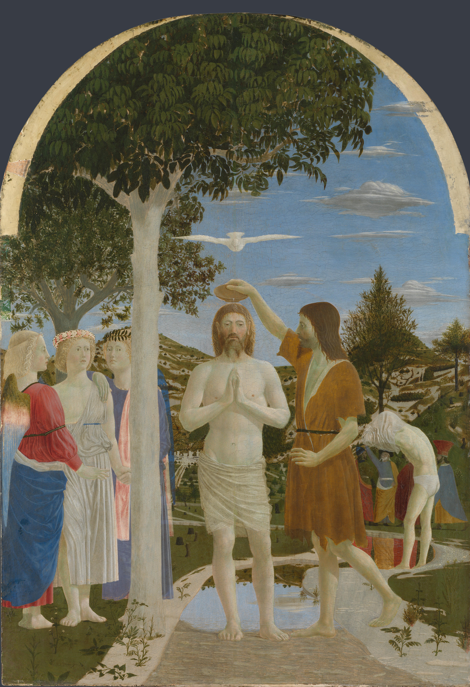

Comment donner à une scène naturelle autant d’ordre et de calme ?

Repères pédagogiques ajoutés.
1 · L’axe du baptême — en rouge
La colombe, la coupe et les mains jointes du Christ s’alignent sur une même verticale. Cette ligne rassemble les éléments essentiels du baptême et place Jésus au cœur de la composition.
2 · L’écho de l’arbre — en vert
Le tronc clair reprend la verticalité du Christ et rappelle la couleur de sa peau. Arbre et corps se répondent : cette répétition donne une structure stable à la scène.
3 · Des formes vues en raccourci — en bleu
Les ailes déployées de la colombe forment une horizontale qui équilibre les verticales. Son corps est vu en raccourci, comme si elle venait vers nous. La coupe, observée de biais, présente un contour ovale : Piero rend ainsi sensible son volume.
4 · Des personnages de plus en plus petits — en orange
Comparez Jean-Baptiste au premier plan, l’homme qui retire sa tunique derrière lui et les personnages plus éloignés. Leur diminution de taille et leurs chevauchements nous font entrer dans le paysage. Les crochets orange permettent de comparer les deux groupes du fond.
À retenir
Piero associe l’ordre des lignes à la profondeur du paysage. La géométrie contribue à l’impression de calme et d’équilibre.
Les tracés sont des guides de lecture approchés ; ils ne reconstituent pas un système de points de fuite.